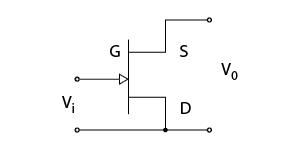
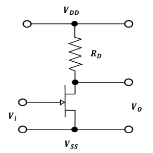
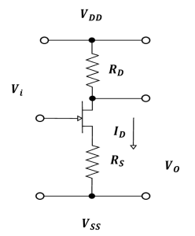
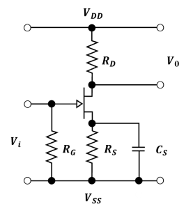
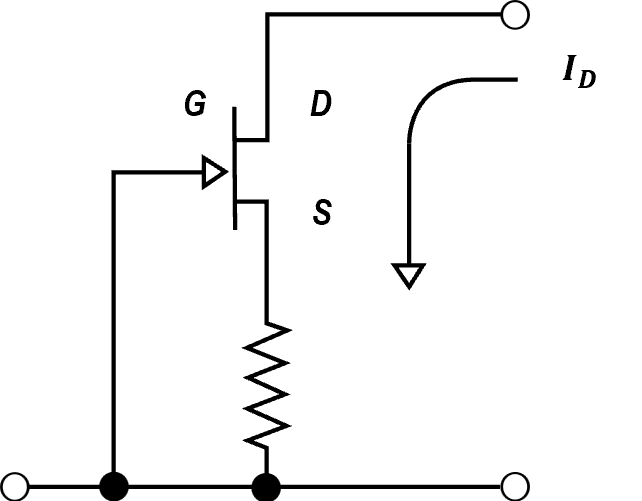
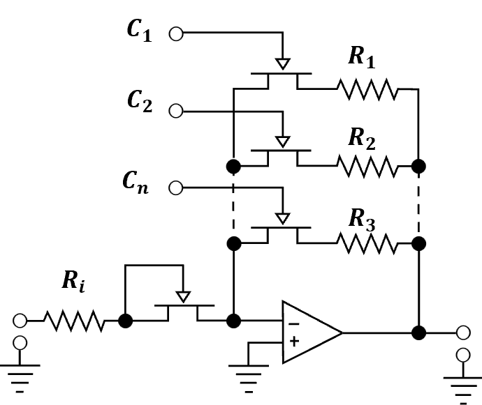
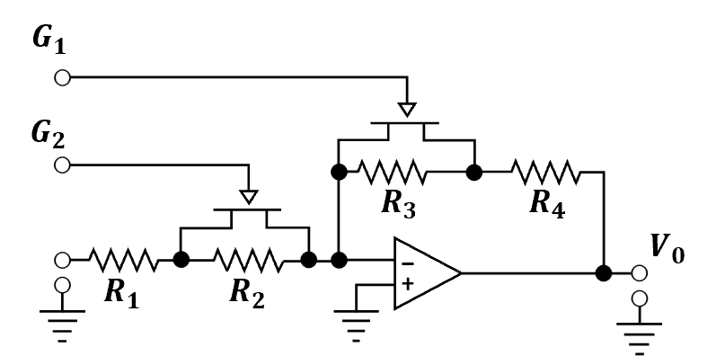
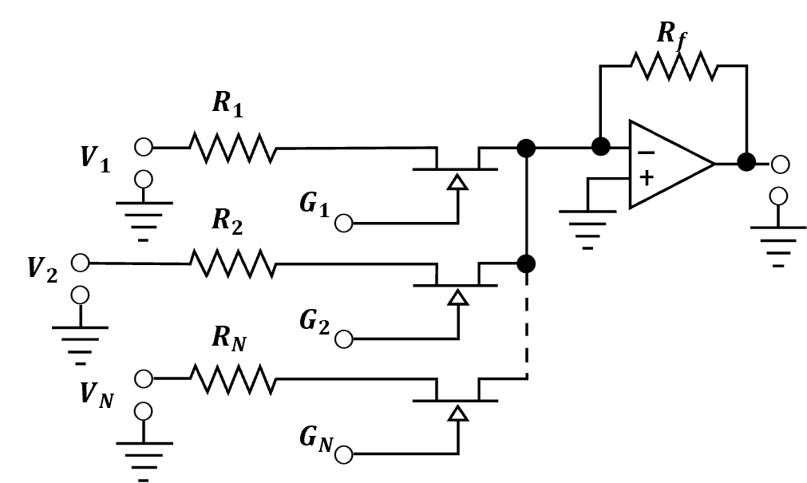
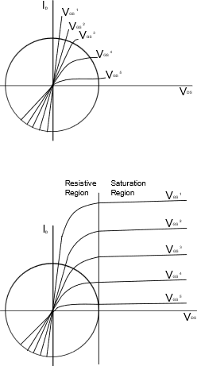

Junction Field Effect Transistor (JFET)#
Amin Hassanzadeh email: aminhassanzadeh@mail.um.ac.ir
Introduction#
The Junction Field Effect Transistor (JFET) exhibits characteristics which often make it more suited to an application than the bipolar transistor. A few potential applications are:
High Input Impedance Amplifier#
Low-Noise Amplifier#
Differential Amplifier#
Constant Current Source#
Analog Switch or Gate#
Voltage Controlled Resistor#
Basic JFET Amplifier Configuration#
There are three basic JFET circuits: the common source, the common gate, and the common drain(as shown in Figure 1).
 figure 1
Each circuit configuration describes a two-port network having an input and an output. The transfer function of each is also determined by the input and output voltages or currents of the circuit. The most common configuration for the JFET as an amplifier is the common source circuit. For an N-channel device the circuit would be biased as shown in Figure 2.
 figure 2
Since the N-channel JFET is a depletion mode device and is normally on, a gate voltage which has a negative polarity with respect to the source is required to modulate or control the drain current. This negative voltage can be provided by a single positive power supply using the self-biasing method shown in Figure 3. This is accomplished by the voltage, which is dropped across the source resistor, \(R_S\), according to the current flowing through it. The gate-to-source voltage \(V_{GS}\) is then defined as:
\(V_{GS} = I_D ∗ R_S\) (1)
 Figure 3
The circuit of Figure 3 also defines a basic single stage JFET amplifier. The source resistor value is determined by selecting the bias point for the circuit from the characteristic curves of the JFET being used. The value of the drain resistor is then chosen from the required gain of the amplifier and the value of the drain current which was previously selected in determining the gate voltage. The value of this resistor must also allow the circuit to have sufficient dynamic range, or voltage swing, required by the following stage. The following stage could be anything from another identical circuit to a loudspeaker for an audio system. The voltage gain of this circuit is then defined as:
\(A_V = (g_m ∗ Z_L) / (1 + g_m ∗ R_S)\) (2)
Where:
\(A_V\) = the voltage gain
\(g_m\) = the forward transconductance or gain of the JFET
\(Z_L\) = the equivalent load impedance
\(R_S\) = the value of the source resistor
The effect of the source resistor on the gain of the circuit can be removed at higher frequencies by connecting a capacitor across the source resistor. This results in an amplifier which has a gain of:
\(A_V = g_m ∗ Z_L\) (3)
The source resistor can only be removed at frequencies above that defined by the resistor-capacitor network in the source circuit. This frequency is defined as:
\(f_{lo} = 1/(2π ∗ R_S ∗ C_S)\) (4)
Where:
\(f_{lo}\) = the low frequency corner
\(π\) = the constant 3.1418
\(R_S\) = the value of the source resistor
\(C_S\) = the value of the source capacitor
The circuit also has a high input impedance, generally equal to the value of the input impedance of the JFET.
Low-Noise Amplifier#
A minor change to the circuit of Figure 3 describes a basic single stage low-noise JFET amplifier. Figure 4 shows that this change only incorporates a resistor from the gate to \(V_{SS}\). This resistor supplies a path for the gate leakage current in an AC coupled circuit. Its value is chosen by the required input impedance of the amplifier and its desired low-noise characteristics. The noise components of this amplifier are the thermal noise of the drain and gate resistors plus the noise components of the JFET. The noise contribution of the JFET is from the shot noise of the gate leakage current, the thermal noise of the channel resistance and the frequency noise of the channel.
 Figure 4
JFET Differential Amplifier#
Another application of the JFET is the differential amplifier. This configuration is shown in Figure 5. The differential amplifier requires that the two transistors be closely matched electrically and physically located near each other for thermal stability. Either input and either output can be used or both inputs and only one output can be used. For the configuration shown, the source resistor is chosen to determine the gate to source bias voltage, remembering that the current will be twice that of each of the JFET drain currents. The value of the drain resistor is chosen to provide a suitable dynamic range at the output. The gain of the circuit is defined by:
\(A_V = 2 ∗ \large\frac{G_m ∗ R_D}{1 + G_m ∗ R_S}\) (5)
Figure 5
This circuit configuration is very useful as a high input impedance stage to be connected to the input of a low-cost operational amplifier.
JFET Constant Current Source#
A constant current source using a JFET is shown in Figure 6. This circuit configuration has many useful applications that range from sourcing and/or sinking current for a sensor to replacing the source resistor in the differential amplifier shown in Figure 5. The current provided by the constant current source of Figure 6 is defined by:
\(I_D = I_{DSS}[1 − (V_{GS}/V_P)]^2\) (6)
Where:
\(I_D\) = the drain current or magnitude of current sourced
\(I_{DSS}\) = the drain saturation current of the JFET
\(V_{GS} = I_D * R_S\)
\(V_P\) = the JFET pinch-off voltage
 Figure 6
It can be readily seen that the use of this circuit in the source circuit of the differential amplifier in Figure 5 would improve the circuit voltage gain as well as reduce the amplifier noise and enhance the common-mode rejection ratio (CMRR) of the amplifier.
JFET Analog Switch#
Figure 7, Figure 8, and Figure 9, show three different applications for the JFET to be used as an analog switch or gate. Figure 7 and Figure 8 both demonstrate methods for realizing programmable gain amplifiers, while Figure 9 shows an analog multiplexer circuit using JFETs and a common op-amp integrated circuit.
It can be seen from Figure 7 that the gain of the stage can be changed by switching in any combination of feedback resistors \(R_1\) through \(R_n\). The JFET in series with the input resistor should be of the same type as those in the feedback paths and is used for thermal stability of the circuit gain. The transfer function of the circuit of Figure 7 is approximated by:
\(V_o/V_i = \large\frac{1/R_1 + 1/R_2 + ... + 1/R_n}{R_i}\) (7)
Where:
\(R_1...R_n\) = the feedback resistors
\(R_i\) = the input resistor
\(V_o\) = the output voltage
\(V_i\) = the input voltage
Note, only those feedback resistors which are switched into the circuit are to be included in the transfer function equation.
 Figure 7
The circuit of Figure 8 shows another method to realize a programmable gain amplifier using a common op-amp, four resistors, and only two JFETs. The gain of this circuit can also be changed by switching in the desired resistors by turning off the appropriate JFET, thus switching in the parallel resistor. The transfer function of this circuit is approximated by:
\(V_o/V_i = \large\frac{R_3 + R_4}{R_1 + R_2}\) (8)
It should be noted that only those resistors which are switched into the circuit are to be included in the transfer function equation.
 Figure 8
Figure 9 shows a circuit in which the JFETs are acting as analog switches to multiplex several input signal sources to a single output source. The transfer function of this circuit is then approximated by:
\(\large\frac{V_o}{V_i} = \large\frac{R_f}{R_n}\) (9)
Where:
\(R_f\) = the feedback resistor
\(R_n\) = any one of the input resistors
 Figure 9
Further examination of this circuit shows that it can also be used as a programmable summing amplifier by switching in any combination of input signals. The transfer function is then approximated by:
\(\large\frac{V_o}{V_i} = \large\frac{R_f}{R_1} + \large\frac{R_f}{R_2} + ... + \large\frac{R_f}{R_n}\) (10)
Again, in this application, only those resistors which are switched into the circuit are to be included in the transfer function equation.
JFET Voltage Controlled Resistor#
Another common application for the JFET is as a voltage-controlled resistor. The JFET action in normal operation simply changes the cross-sectional dimensions of the channel. When the JFET is biased in the resistive or linear region as shown in Figure 10, a change in channel dimensions simply changes the drain to source resistance of the device.
 Figure 10
Figure 11 depicts a JFET being used as a voltage-controlled resistor (VCR). The resistance is determined from the bias point conditions selected from the curves of Figure 10. The resistance is then defined as:
\(R_{DS} = \large\frac{V_{DS}}{I_{DS}}\) (11)
Where:
\(R_{DS}\) = the drain to source resistance
\(V_{DS} = V_o\) or the output voltage
\(I_DS\) = the drain current
It can readily be seen from the curves of Figure 10 that any change in the input voltage (\(V_i\)) or the gate to source voltage will cause a corresponding change in the drain current. Equation 11 indicates that there is a corresponding change in the drain to source resistance (\(R_{DS}\)). Therefore, the resistance is controlled by the voltage applied to the gate, resulting in a voltage-controlled resistor.
Figure 11
Difference between BJT and JFET#
The crucial difference between BJT and JFET is that BJT is a bipolar device while JFET is a unipolar device. It is so because the operation of BJT is dependent on injection and collection of minority charge carriers that includes both electrons and holes. As against JFET is majority carrier device, thus termed as unipolar.
Another major difference between BJT and JFET is that BJT falls under current controlled device category whereas JFET falls under voltage controlled device category.
 comparison chart
comparison chart
The points given below describes the difference between BJT and JFET:
\(\cdot\) The key difference between BJT and JFET is that BJT is a device in which output current is controlled by the base current. On the contrary, JFET is a device whose output current is controlled by the input voltage applied to it.
\(\cdot\) BJT possess low to medium input impedance whereas when we talk about JFET, it possesses high input impedance.
\(\cdot\) Whenever there is a need for high gain and fast response then BJT’s are preferred while JFET’s are low gain devices.
\(\cdot\) A BJT is a device that possesses low thermal stability whereas JFET possesses high thermal stability.
\(\cdot\) Another key difference that exists between BJT and JFET is that BJT is preferred in low current applications while JFET is preferred in low voltage applications.
Example 1#
For the circuit of Figure 12, determine \(I_D\) , \(V_{DS}\). Assume \(I_{DSS}\) = 10 mA and \(V_{GS(off)}\) = −5 V.
 Figure 12
Figure 12
First, because \(I_G \approx 0\), the drop across \(R_G is \approx 0\) and \(V_{GS} = V_{GG}\). Using equation 6:
\(I_D = I_{DSS}(1−\frac{V_{GS}}{V_{GS(off)}})^2\)
\(I_D = I_{DSS}(1−\frac{-2V}{-5V})^2\)
\(I_D = 3.6mA\)
Looking at the drain-source loop, KVL shows::
\(V_{DS} = V_{DD} − I_DR_D\)
\(V_{DS} = 25V − 3.6mA × 3.3kΩ\)
\(V_{DS} = 13.1V\)
Example 2#
Detemine \(I_D\) , \(V_{DS}\) and \(V_{GS}\) in the circuit of Figure 13. \(I_{DSS}\) = 15 mA and \(V_{GS(off)}\) = −3 V.
 Figure 13
Figure 13
We begin by finding \(I_E\)
\(I_E = \large\frac{∣VEE∣ − 0.7V}{RE}\)
\(I_E = \large\frac{10V − 0.7V}{3.6kΩ}\)
\(I_E = 2.58mA\)
\(I_E\) is the same as \(I_S\) and \(I_D\), therefore
\(V_D = V_{DD} − I_DR_D\)
\(V_D = 20V − 2.58mA × 4.7kΩ\)
\(V_D = 7.87V\)
To find \(V_S\) we note that \(V_S = −V_{GS}\) and rearrange Equation 6
\(I_D = I_{DSS}(1−\frac{V_{GS}}{V_{GS(off)}})^2\)
\(V_{GS} = V_{GS(off)}(1−\sqrt{\frac{I_D}{I_{DSS}}})\)
\(V_{GS} = −3V(1−\sqrt{\frac{2.58mA}{15mA}})\)
\(V_{GS}\) = −1.24V
Therefore \(V_S\) = 1.24V and
\(V_{DS} = V_D − V_S\)
\(V_{DS} = 7.87V − 1.24V\)
\(V_DS = 6.63V\)
Conclusions#
This application note describes several useful junction field effect transistor circuit configurations. The high input impedance and low-noise circuits are often used as input stages to voltage measurement instruments such as oscilloscopes and digital volt meters.
The differential amplifier is a very widely used circuit in applications where the difference between two voltages is to be measured, such as the input stage of an operational amplifier. The use of JFETs in this application provides high input impedance and low input leakage current. Constant current sources have many uses such as setting bias conditions for many other circuits in a system, sourcing and/or sinking current for a sensor and replacing the source resistor in a differential amplifier circuit. Voltage controlled resistors are normally found in automatic gain control circuits and voltage controlled tuning circuits.
Therefore, it is clearly seen that many applications for JFETs exist. Those discussed in this application note have many variations, refinements, and other uses. It should be noted that these applications were described in the simplest detail and additional study of the application should be considered before using any of the circuits presented.
References#
https://electronicscoach.com/difference-between-bjt-and-jfet.html